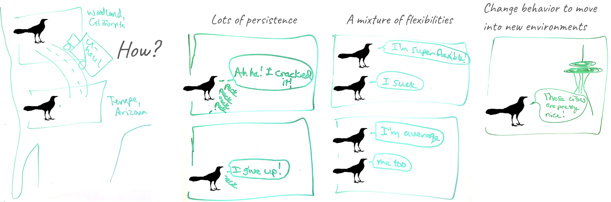

|
|
|


|
Corina Logan (she/her)
Group Leader
Department of Human Behavior, Ecology and Culture
Max Planck Institute for Evolutionary Anthropology
corina_logan [at] eva.mpg.de
CV | Lab | Ethical publishing | Español
Follow the research at Mastodon & YouTube
|
© National Geographic Society
Watch grackles solve a challenge
from Aesop's Fables
and read the story
NEWS: Check out my talk on recent grackle results and the launch of ManyIndividuals
|
Human modified environments are rapidly increasing and populations must either adjust to or suffer from these habitat changes. Behavioral flexibility, the ability to adapt behavior to new circumstances, is thought to play an important role in adapting to changing environments.
Does flexibility help individuals succeed in human modified environments? The ManyIndividuals reproducible research program
We can manipulate grackle flexibility through serial reversal learning, which makes these individuals more flexible and more innovative in new contexts. I co-founded a global network of researchers with field sites to investigate whether we can manipulate flexibility in endangered and successful species and, if so, whether this helps them survive in human modified environments. Follow the link to learn about our open, verifiable, and replicable workflow that makes our research better and faster.
How are great-tailed grackles rapidly expanding their range?

Great-tailed grackles, a flexible bird species, have rapidly expanded their range into North America over the past 140 years. How were they able to do this so quickly? Grackles increased their habitat breadth between 1979 and 2019 by moving into more urban, arid environments. This could indicate that they are using behavior to adapt to new environments. We tested this and found that grackles in a recently established population on the edge of their range (Woodland, California) are more persistent and have a higher variance in flexibility compared with grackles in an older population away from the northern edge (Tempe, Arizona). Therefore, it appears that behavior is involved in facilitating this rapid range expansion.
What is behavioral flexibility and how does it relate to other behaviors?
However, flexibility is rarely directly tested in species in a way that would allow us to determine how flexibility works and predict a species' ability to adapt their behavior to new environments.
In Santa Barbara, I found that they are behaviorally flexible and that flexibility is independent from problem solving ability, problem solving speed, other behaviors, and innovativeness, and that grackles can solve some problems with a similar efficiency to New Caledonian crows. In Tempe, Arizona, my team and I found that reversal learning (a measure of flexibility) positively correlates with performance on the go/no go task (a measure of inhibition), and is not strongly related with detour performance (a measure of inhibition) or causal cognition.
|
|